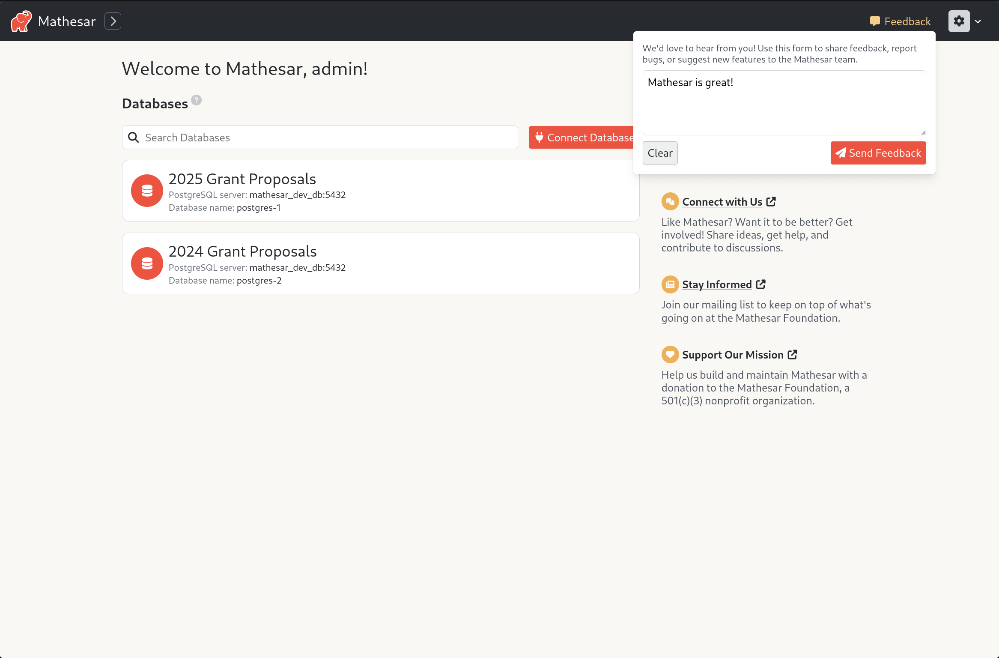
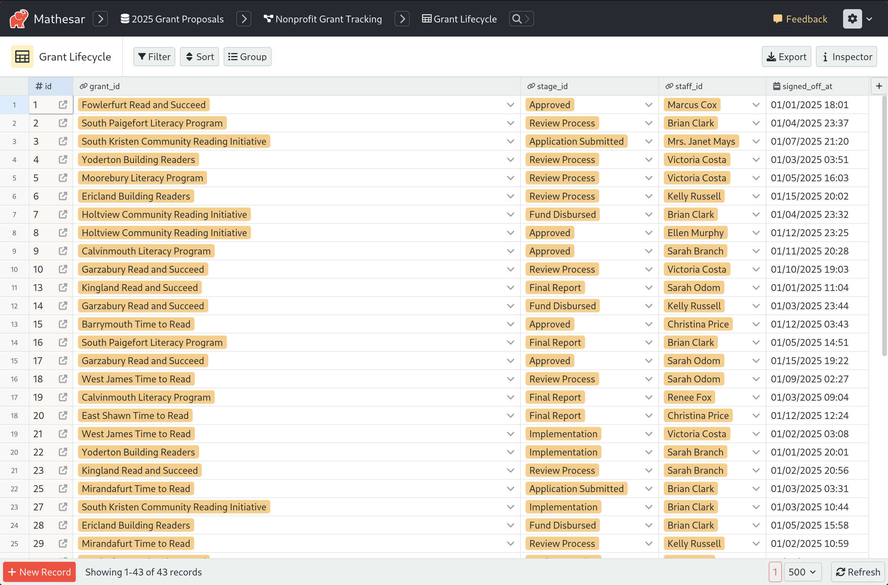
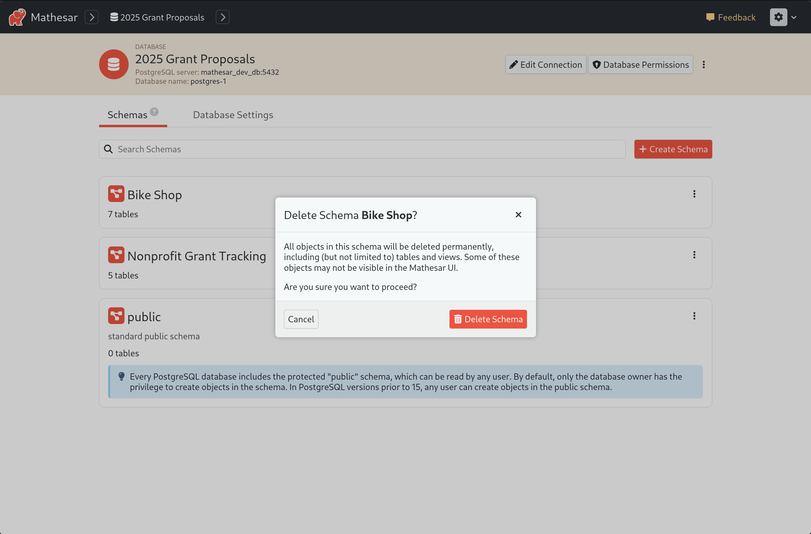
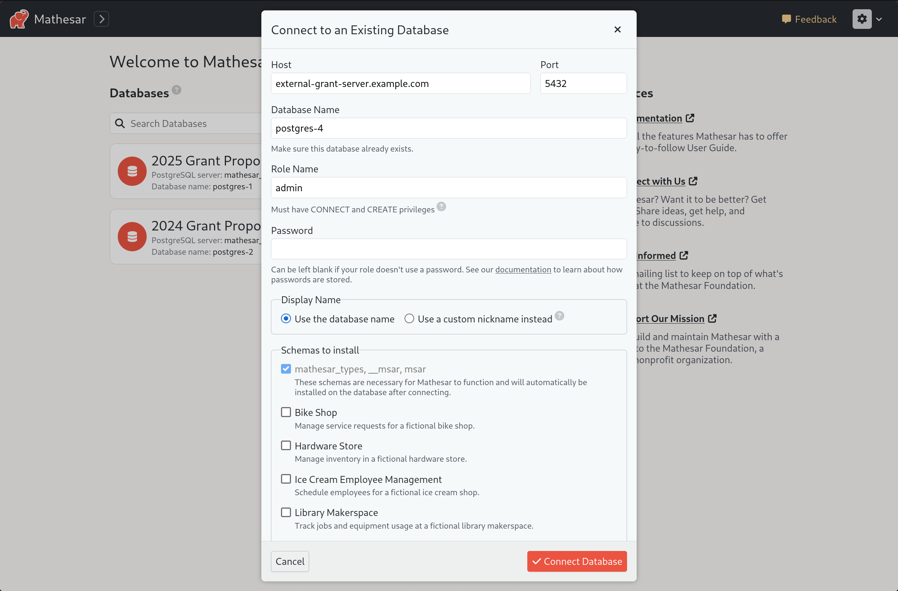

Mathesar 0.2.1¶
Summary¶
Mathesar 0.2.1 addresses a number of bug fixes identified by members of our community during our beta release. This release also includes some quality-of-life improvements to Mathesar like nicknames for databases, persisted column widths, and the ability to connect databases without a password.
We also have a new form to allow users to submit suggestions and feedback about Mathesar to our team.
This page provides a comprehensive list of all changes since Mathesar 0.2.0.
Improvements¶
Database nicknames¶
Users can now assign nicknames to their configured databases, making it easier to identify and organize connections. Instead of relying on technical database names, users can set meaningful labels that will be used throughout Mathesar.

This is especially useful when managing multiple databases with identical names, or when connecting to external services where database names are automated.

In addition to nickname support, all database connection values can now be edited.
In-app feedback¶
Users can now provide direct feedback within the app using a built-in feedback form. This simple input allows users to share thoughts, report issues, or suggest improvements without leaving the interface.

Column widths are persisted¶
Column widths in table views are now automatically saved, ensuring a consistent layout across sessions. Users no longer need to manually adjust column sizes every time they revisit a table, improving usability and efficiency when working with columns of varied lengths.

Drop schema contents when deleting¶
Mathesar now automatically drops all objects within a schema before deleting the schema itself, without relying on CASCADE. This ensures a safer and more controlled deletion process, preventing unintended removal of external dependencies while still allowing users to delete schemas that contain objects.

This strikes a unique balance between safety and convenience, making it easier to manage schemas while reducing the risk of accidental data loss. It also provides greater confidence when granting database access to users, as deletions remain contained and predictable.
Docker Compose installs are updated to Postgres 17¶
For existing users
See the upgrading Postgres section for instructions on safely upgrading your Postgres version.
New installs of Mathesar using our recommended Docker Compose installation will now use Postgres 17. Prior to 1.2.1, Mathesar installs configured via our docker compose file used version 13.
Support connections without a database password¶
Mathesar now allows users to configure database connections without requiring a password. This provides greater flexibility for users relying on secure, passwordless authentication mechanisms while maintaining compatibility with a variety of database configurations.

Additional features¶
- Backend changes to support CSV file imports with an id column #4269
- Allow patching records in tables with non-integer primary keys #4246
Bug fixes¶
- Fix UnicodeEncodeError during connection attempt #4254 #4272
- Remove unnecessary loading spinner from table widget during refresh #4222
Documentation¶
- Update documentation styling #4227
- README improvements #4208 #4212 #4184
- Documentation cleanup #4205 #4201 #4203
- Small docs improvement to collaborators #4225
- Updated Mathesar description to align with messaging. #4213
- Add simple analytics to docs #4217
Maintenance¶
The following PRs represent work done to reduce technical debt, update dependencies, improve developer documentation, and maintain our workflows.
#4259 #4266 #4265 #4230 #4146 #4253 #4209
Upgrading to Postgres 17¶
Follow these steps to upgrade Postgres to the latest version. Note that this upgrade is only necessary for existing Mathesar users who would like to switch to the latest version of Postgres.
- Navigate to your installation directory.
- Shut down Mathesar with
docker compose down. - Create a backup of your installation with
cp -r msar msar.backup. Keep themsar.backupfolder in a safe location. - Back up your existing Docker Compose configuration with
cp docker-compose.yml docker-compose.yml.backup. - Download the latest Docker Compose file with:
- Edit the new
docker-compose.ymlfile to restore any personal variables or custom configurations from your backup. - Restart Mathesar with the latest images:
- Once you’ve confirmed everything is working correctly, you can delete the backup files.
Troubleshooting & rolling back¶
If you encounter issues or the upgrade fails:
- Restore the previous
docker-compose.yml: - Restore your Mathesar installation:
- Start Mathesar again:
For additional support, reach out to the Mathesar team via a GitHub issue or in the general channel of our Matrix chat.
Upgrading to 0.2.1¶
For installations using Docker Compose¶
If you have a Docker compose installation (including one from the guided script), run the command below:
Your installation directory may be different
You may need to change /etc/mathesar/ in the command above if you chose to install Mathesar to a different directory.
For installations done from scratch¶
If you installed Mathesar from scratch, then use these steps to upgrade your installation to 0.2.1.
-
Go to your Mathesar installation directory
Note
Your installation directory may be different from above if you used a different directory when installing Mathesar.
-
Pull version 0.2.1 from the repository
-
Update Python dependencies
-
Activate our virtual environment
-
Run Django migrations
-
Download and extract frontend assets
-
Compile Mathesar translation files
-
Update Mathesar functions on the database:
-
Restart the gunicorn server